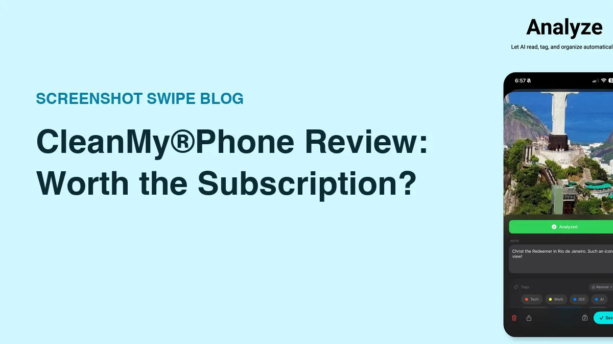
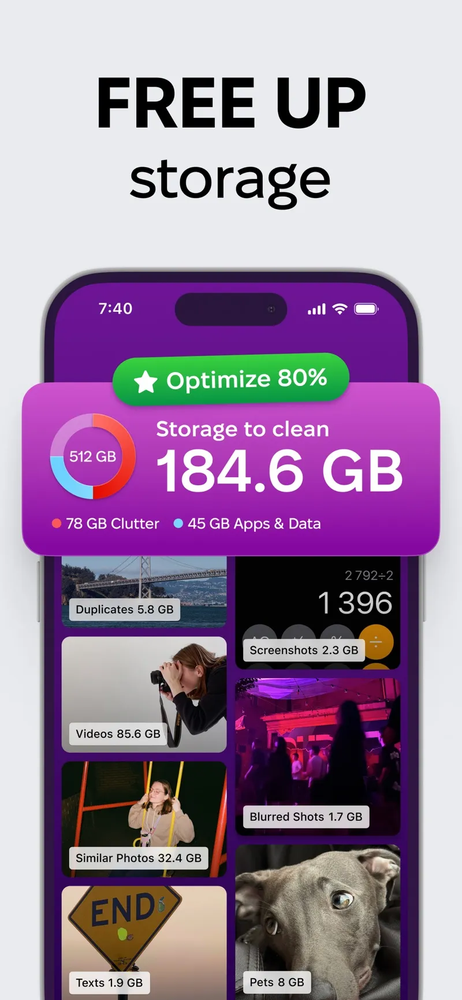

CleanMy®Phone Review: Is It Worth the Subscription? (2026)

Quick answer: CleanMy®Phone is worth the subscription if your library holds years of duplicates, similar bursts, and large videos — a first scan often finds tens of gigabytes to clear in minutes. Skip it if your clutter is mostly screenshots, or if you'd run it once and cancel: single cleanups are done better by free tools.
Storage-full warnings have a particular energy. You're trying to film something, iOS says no, and suddenly you're speed-deleting photos at a traffic light.
CleanMy®Phone is MacPaw's answer — the CleanMyMac company applying the same scan-and-purge formula to iPhone. This review covers what the scanner actually finds, where the subscription math works, and where it doesn't. Fair warning on perspective: we make a competing cleanup app, so I'll stay concrete and let you weigh the bias. Ratings pulled from the iTunes API on July 18, 2026.
What does CleanMy®Phone actually do?

The scan clusters your library into clearable categories — duplicates, similar shots, videos, screenshots.
Platform: iOS App Store · macpaw.com/cleanmyphone · Price: Free trial, then subscription · Rating: 4.6 ★ (22,643 ratings)
You grant photo access, it scans, and it presents your library as clearable buckets: exact duplicates, "similar shots" (burst photos and near-identical retakes), blurred photos, screenshots, and your largest videos. Each category shows its gigabyte count. You review a grid, uncheck anything you want to keep, and clear the category.
The similar-shots detection is the standout. Everyone has eleven near-identical photos of the same sunset; the app clusters them and pre-selects all but the best one. Over a multi-year library, that single feature routinely accounts for the biggest share of recovered space.
What's genuinely good about it?
- Speed to result. Scan, review, clear — 20 minutes from install to tens of gigabytes freed on a neglected library. Nothing swipe-based comes close for raw throughput.
- The similar-shots clustering makes decisions for you and is right most of the time. You veto rather than choose.
- MacPaw pedigree. Established developer, polished interface, responsive support — meaningful in a category full of scammy "cleaner" apps.
- Safe deletion. Everything goes through Apple's photo library, so it lands in Recently Deleted with the standard 30-day recovery window.
Where does it fall short?
- It's subscription-only for real use. The trial is limited, and the recurring cost only makes sense if you'll scan a few times a year. One-and-done users are better served by free tools.
- No triage workflow. There's no swipe-through-everything mode. It removes redundancy; it doesn't help you make one-by-one keep decisions.
- Screenshots are just clutter to it. They appear as a deletable category, and that's the whole story — no text search, no notes, no way to keep the useful ones organized.
- iOS already does some of this free. Photos → Utilities → Duplicates catches exact duplicates natively. CleanMy®Phone's edge is the fuzzier similar-shots detection and the all-in-one flow.
So is the subscription worth it?
Run the math on your own library. Open Settings → General → iPhone Storage and look at the Photos number. If it's a three-digit gigabyte figure built up over years of bursts, retakes, and 4K video, the first scan alone justifies a month's subscription — clear it, keep the subscription if you'll maintain quarterly, cancel if you won't.
If your library is modest and your actual complaint is "I can never find anything and my screenshots are a mess," a scanner doesn't fix that. Organization does. Our own Screenshot Swipe exists for that half of the problem — swipe triage for screenshots with OCR search, notes, and tags on everything you keep, free for the core features. Different tool, different job; plenty of people need both.
Check the price yourself: subscription pricing varies by region and changes over time — the current figure is on the App Store listing under In-App Purchases.
Frequently asked questions
Is CleanMy®Phone worth it?
Worth it for libraries with years of duplicates, similar bursts, and large videos — the first scan often finds tens of gigabytes. Skip it if your clutter is mostly screenshots or you'd only run one cleanup and cancel.
Is CleanMy®Phone free?
There's a limited free trial; full functionality requires a subscription. Pricing varies by region — check the App Store listing's In-App Purchases section for the current figure.
Is CleanMy®Phone safe?
Yes, in the ways that matter. MacPaw is an established developer, deletions pass through Recently Deleted with the 30-day recovery window, and iOS gates photo access behind your explicit permission.
Does CleanMy®Phone handle screenshots?
Only as bulk-deletable clutter. There's no triage gesture, no OCR search, and no organization for the screenshots you keep — that side of the problem needs a screenshot-specific tool.
The decision in four steps
- Check Photos' size in Settings → General → iPhone Storage. Under ~50 GB, free tools probably cover you.
- Run iOS's free duplicate merge first (Photos → Utilities → Duplicates). What's left is what CleanMy®Phone would earn its fee on.
- Use the trial on your worst category — usually similar shots — and see what the full scan claims it can free.
- Subscribe only if you'll rescan. Quarterly maintenance justifies it; a single purge doesn't.
Clear the pile. Keep the useful details.
Screenshot Swipe is free to start. Swipe through screenshots, review your deletion choices, and add notes or tags to the keepers.
Download on theApp Store